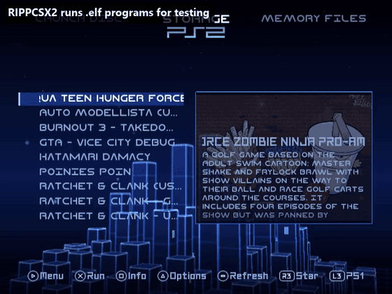
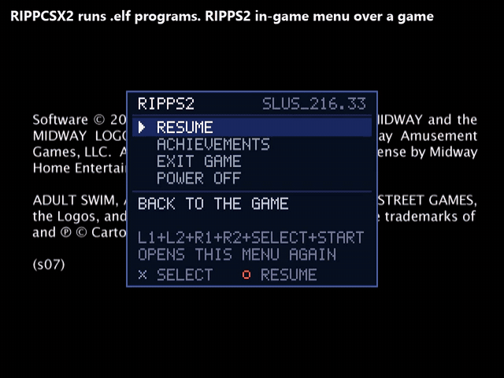
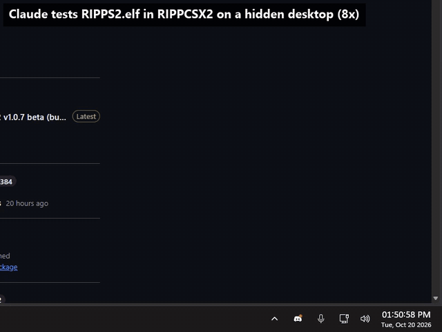

RIPPCSX2 is a PlayStation 2 emulator built for testing. It is PCSX2 v2.9.96 with what a PS2 homebrew developer needs to see the real thing, made to be driven by you or by an AI agent.
It began as the test lab of the RIPPS2 front end. It is for anyone building PS2 homebrew, themes, tools or game fixes.
Windows 10 or 11, x64, a CPU with AVX2. Unzip it anywhere and point it at your own BIOS dump. It keeps its settings in its own folder, so a PCSX2 you already have is not touched.
It behaves like a real PS2
Every clip here is a real run in the lab, cut to a few seconds and linked to its video.

One ELF launching another. It runs .elf programs for testing, and when one starts another it hands the machine over and is gone, as on a console. This is the newest RIPPS2 started from a memory card by the old one.

An in-game menu over a real game. The menu hooks the GS registers through the EE's hardware breakpoint to learn which frame the game is showing. Stock PCSX2 has no such breakpoint, so the menu has nothing to draw over.

An AI agent running a test. The emulator is on a hidden desktop. The small panel is all that shows, and you keep your keyboard and mouse.
What it adds to PCSX2
- A RIPPCSX2 menu with all of the below in one place, built like the menus beside it.
- The EE's data write breakpoint. COP0
BPC, DAB and DABM work, in the interpreter and the recompiler. OPL's GSM and in-game menus depend on it.
- True 720p and 1080i. Shown 16:9, captured at 1280 x 720 and 1920 x 1080, screenshots the same. Stock PCSX2 draws them 4:3.
- 1080i in the right place. From line 40, as the console's own timing has it. Stock moves it up 42 lines.
- Recordings that survive a mode change, carrying on in a new file at the new size.
- Video mode lines in the log, with the sync timing and each display's registers, on every change.
- A taskbar button for hidden runs, so a volume mixer or a per-app volume mod reaches a test run like any other program.
Everything else is plain PCSX2, and standard definition is byte for byte the same as stock. Each change can be turned off for a side by side.
What it is for
- Testing ELFs and homebrew
- Run ELF and Run Last ELF: rebuild, press, look. Read the EE and IOP console, the display registers, and PS2 memory over PINE. Keep a save state of the moment it breaks.
- Front ends and tools
- What RIPPS2 is built on: storage, memory cards, video modes, handing over to a game or another ELF, all without touching a console until it is ready for one.
- Themes
- Judge a theme for OPL, RiptOPL or RIPPS2 at 720p and 1080i as a TV shows it, with true-size screenshots and walkthrough videos.
- In-game menus and GS tools
- Anything built on the data write breakpoint runs here instead of only on hardware: GSM, in-game menus, screenshots read back from GS memory.
- AI-assisted testing
- Scripted runs with screenshots, captures, save states and memory reads, on a hidden desktop that never takes over your PC.
The goal: the whole library
The biggest job for RIPPCSX2 is one nobody has finished: testing PS2 games through Open PS2 Loader's own code path, and writing down what each one needs.
OPL does not run a game the way a disc does. It patches the kernel, swaps the IOP's drivers and answers for the drive, and some games need one of its compatibility modes to survive that. Finding out which takes a console, a copy of the game and an evening, for one title. The aim is that a person or an agent can do it in the emulator, in minutes, then check the answer on a console.
Works today
- RIPPS2's OPL-derived core starting games from a virtual hard drive, as it does on a console
- In-game menus over real game frames
- ELFs and homebrew, including one starting another
- The Compatibility Report: one game's result, the modes used and the machine's state, saved as a file and a row in a CSV
Where it is going
- The OPL sandbox: stock OPL and its forks starting games unmodified
- Mode patching: trying Modes 1 to 8 on a game automatically, and finding the set it needs
- KELFs, and homebrew apps launched through the same paths they take on hardware
- A shared list: every game, its result, its modes and its fixes
OPL's compatibility modes
| 1 | Accurate Reads: disc reads at the disc's own timing |
|---|
| 2 | Synchronous Mode: reads block until they finish |
|---|
| 3 | Unhook Syscalls: OPL's hooks come back out of the kernel |
|---|
| 4 | Skip Videos: zero-size PSS videos and skipped Bink ones, past a video that hangs |
|---|
| 5 | Emulate DVD-DL: answers as a dual layer disc |
|---|
| 6 | Disable IGR: no in-game reset or menu, for games that clash with the hook |
|---|
| 7 | Neutrino only: fixes a game's buffer overrun |
|---|
| 8 | Slow Reads: Accurate Reads at the CD rate, for audio that breaks under Mode 1 |
|---|
Someone could use this to make the entire library run one day. That is the end goal, and it is why this exists as a fork and not a patch.
Hand it to your AI assistant
The repo is written for agents as much as people. Give yours the link and ask it to set RIPPCSX2 up: the README tells it where to get the build, where your BIOS goes (your own dump, never a download), how to run an ELF or an image from the command line, where the logs and captures land, and how to read PS2 memory over PINE.
https://github.com/akilluminati47/RIPPCSX2
This page
Both consoles are modelled in Blender from published sizes and from photographs, every position measured through a solved camera. The parts inside follow real teardowns. Blow one up and you get the other. There is no Sony audio here: the explosions are synthesised, and nothing loads from any other server. The scripts that build the models are in tools/site/blender.
Unofficial. RIPPCSX2 is a GPL-3.0 fork of PCSX2 by the PCSX2 team, not affiliated with them or with Sony. Please report problems to RIPPS2, never to the PCSX2 project. Sony, PlayStation, PS2, DVD and MagicGate are trademarks of their owners. Made by akilluminati47, built with Claude.